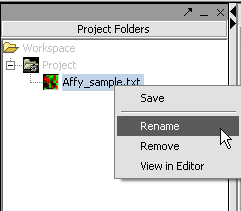

Renaming a dataset can be used to distinguish a file from others. Renaming has no effect on the other files in the project folder.
To rename a dataset
1. Right-click the dataset name and choose Rename.
2. Provide new dataset name in the “Dataset name" pop-up window.
3. Click OK to rename the dataset.

Alternate approach
1. Select the file name from the project tree.
2. From the main menu, select Edit>Rename>File.
3. Enter the new dataset name in the “Dataset name" pop-up window and click OK to rename the dataset.
Note: It’s possible to rename projects and dataset from the project window by right clicking on the element and using the pop-up menus or using the Edit menu from the main menu bar.